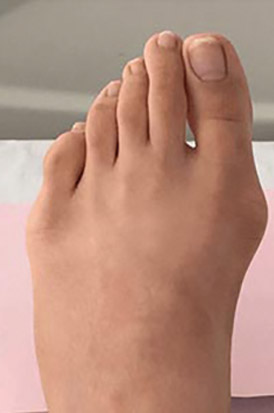

HALLUPATCHES №1
Jedno rozwiązanie na wszelkie dolegliwości związane z haluksami.
Przed HalluPatches No1
Po HalluPatches No1
Przed HalluPatches No1
Po HalluPatches No1
Przed HalluPatches No1
Po HalluPatches No1
Przed HalluPatches No1
Po HalluPatches No1
Przed HalluPatches No1
Po HalluPatches No1

Przed HalluPatches No1
Po HalluPatches No1
Pełna ochrona
obolałej kości

Likwidacja
bólu
w dzień i nocy
Koryguje
ustawienie
palucha
Prawidłowa
biomechanika
palcy
Stopniowa
korekcja
deformacje kości